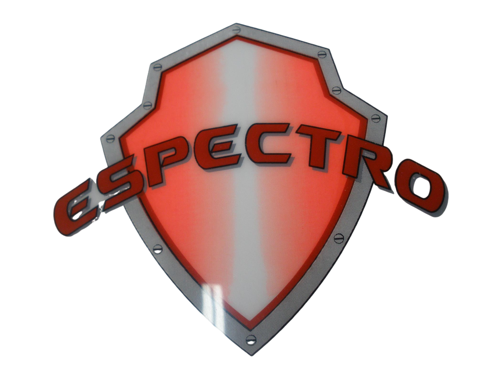
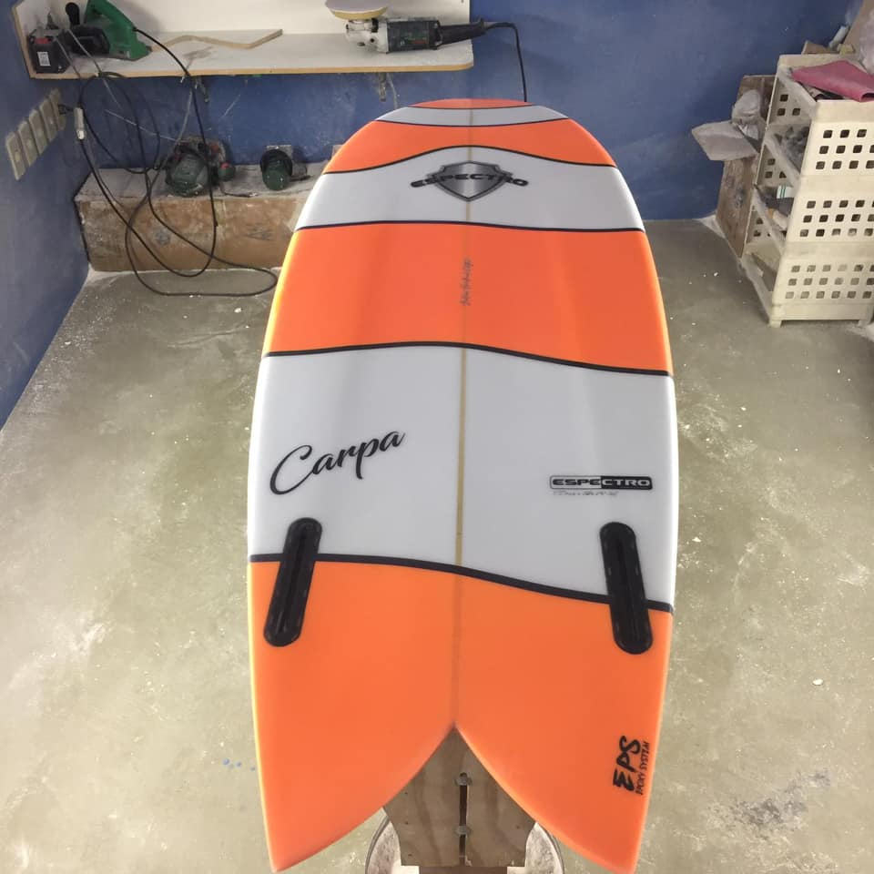
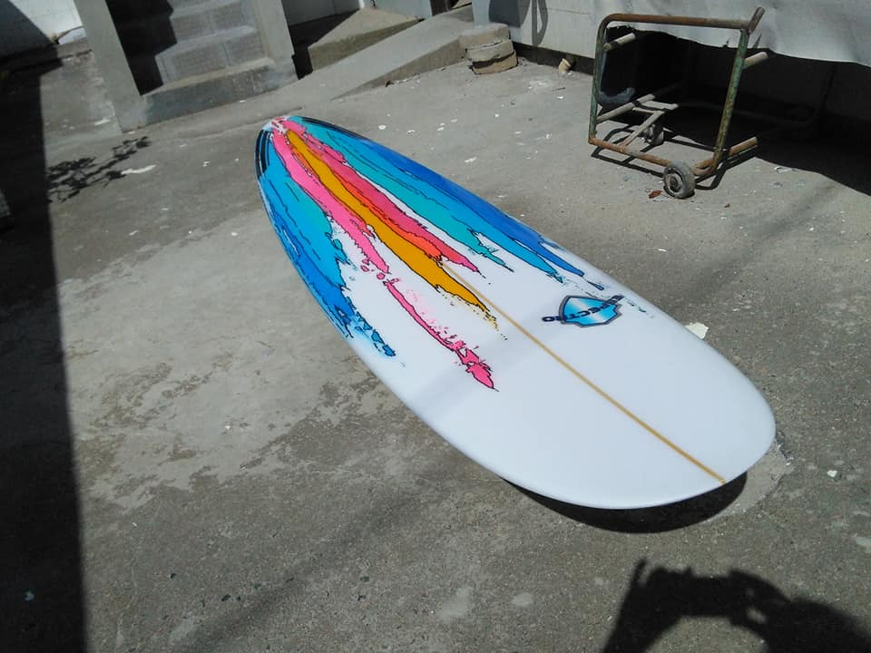
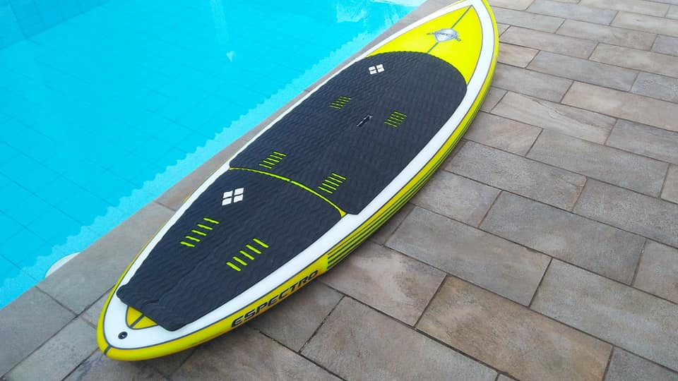

|  | ESPECTRO SURFBOARDS | Página Principal | Encomenda | Portfólio |
| Tipo de prancha | Descrição |
|---|---|
|  | Shortboards são as pranchas pequenas, mais fáceis de transportar e ideais para alta perfomance. |
|  | Longboards são pranchas grandes que remetem aos primórdios do surf, com manobras classicas. Ideal para quem quer aprender a surfar por usa alta flutuabilidade. |
|  | Stand-up's são pranchas para quem já quer ficar de pé, mesmo sem onda. No mar ou na lagoa, com o auxílio de um remo é possivel usar essa prancha até para quem não tem experiência alguma. |
| Todos os direitos reservados Espectro Surfboards ©. |